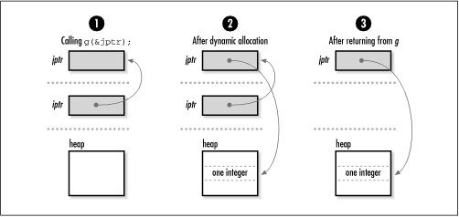

2.2 Storage Allocation
When we declare a pointer in C, a certain amount of space is
allocated for it, just as for other types of variables.
Pointers generally occupy one machine
word, but their size can vary. Therefore, for portability, we
should never assume that a pointer has a specific size.
Pointers often vary in size as a result of compiler settings
and type specifiers allowed by certain C implementations. It
is also important to remember that when we declare a pointer,
space is allocated only for the pointer itself; no space is
allocated for the data the pointer references. Storage for the
data is allocated in one of two ways: by declaring a variable
for it or by allocating storage dynamically at runtime (using malloc or realloc, for example).
When we declare a variable, its type tells
the compiler how much storage to set aside for it as the
program runs. Storage for the variable is allocated
automatically, but it may not be persistent throughout the
life of the program. This is especially important to remember
when dealing with pointers to automatic variables. Automatic variables are those for
which storage is allocated and deallocated automatically when
entering and leaving a block or function. For example, since
iptr is set to the address of the automatic
variable a in the following function f, iptr becomes a
dangling pointer when f
returns. This situation occurs because once f returns, a is no
longer valid on the program stack (see Chapter
3). int f(int **iptr) {
int a = 10;
*iptr = &a;
return 0;
}
In C, when we dynamically allocate storage,
we get a pointer to some storage on the heap (see Chapter
3). Since it is then our responsibility to manage this
storage ourselves, the storage remains valid until we
explicitly deallocate it. For example, the storage allocated
by malloc in the following code
remains valid until we call free at some later time. Thus, it
remains valid even after g
returns (see Figure
2.2), unlike the storage allocated automatically for
a previously. The parameter
iptr is a pointer to the object we wish to
modify (another pointer) so that when g returns, iptr
contains the address returned by malloc. This idea is explored further
in the section on pointers as parameters to functions. #include <stdlib.h>
int g(int **iptr) {
if ((*iptr = (int *)malloc(sizeof(int))) == NULL)
return -1;
return 0;
}

Pointers and storage
allocation are arguably the areas of C that provide the most
fodder for the language's sometimes bad reputation. The misuse
of dynamically allocated storage, in
particular, is a notorious source of memory leaks. Memory leaks are blocks of storage that are
allocated but never freed by a program, even when no longer in
use. They are particularly detrimental when found in sections
of code that are executed repeatedly. Fortunately, we can
greatly reduce memory leaks by employing consistent approaches
to how we manage storage.
One example of a
consistent approach to storage management is the one used for
data structures presented in this
book. The philosophy followed in every case is that it is the
responsibility of the user to manage the storage associated
with the actual data that the data structure organizes; the
data structure itself allocates storage only for internal
structures used to keep the data organized. Consequently, only
pointers are maintained to the data inserted into the data
structure, rather than private copies of the data. One
important implication of this is that a data structure's
implementation does not depend on the type and size of the
data it stores. Also, multiple data structures are able to
operate on a single copy of data, which can be useful when
organizing large amounts of data.
In addition,
this book provides operations for initializing and destroying
data structures. Initialization may involve many steps, one of
which may be the allocation of memory. Destroying a data
structure generally involves removing all of its data and
freeing the memory allocated in the data structure. Destroying
a data structure also usually involves freeing all memory
associated with the data itself. This is the one exception to
having the user manage storage for the data. Since managing
this storage is an application-specific operation, each data
structure uses a function provided by the user when the data
structure is initialized. |